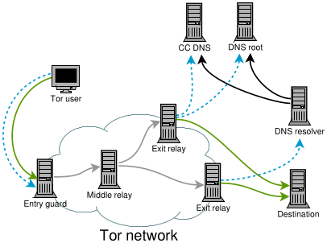
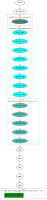
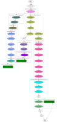

 This research project investigates how the domain name system (DNS) can be used to improve end-to-end correlation attacks on low-latency anonymity networks such as Tor. Traditional correlation attacks have focused on linking together point-to-point TCP traffic between the Tor client and its destination. In practice, however, there is more going on. Before exit relays can establish a connection to the destination server, they must resolve the domain name. Depending on how the exit relay is configured, the resulting DNS resolution traffic can traverse parts of the Internet that the subsequent TCP connection does not traverse. This exposure could facilitate correlation attacks as an AS-level attacker is more likely to see both “ends” of the Tor connection. The diagram to the right illustrates this problem. The solid green lines represent TCP connections while the dashed blue lines represent DNS traffic.
In particular, we are interested in the following questions:
To date, our writing is limited to mailing list postings and a poster that give an overview of our preliminary research results.
We have developed a tool, ddptr, which stands for “DNS Delegation Path Traceroute.” The tool determines the DNS delegation path for a fully qualified domain name, and then runs UDP traceroutes to all DNS servers on the path. These traceroutes are then compared to a TCP traceroute to the web server behind the same fully qualified domain name.
  Now imagine that our machine is trying to establish a TCP connection to baidu.com. How many autonomous systems will our network packets traverse? The two images to the right show an example. (Click on the images for a larger version.) First, our machine has to resolve the domain before it can send packets to the IP address. The left image shows UDP traceroutes to all DNS servers in the delegation path for “baidu.com,” namely 192.58.128.30, 192.43.172.30, and 202.108.22.220. In total, these traceroutes traversed 13 different autonomous systems, illustrated by the rectangular boxes. The right image shows a TCP traceroute to “baidu.com.” The traceroute traversed at least four autonomous systems. In this simple example, we see that the DNS resolution process for baidu.com exposes our traffic to more autonomous system than the actual TCP connection, provided we run our own DNS resolver.
In addition to ddptr we maintain a GitHub repository that contains code snippets that we use to process the datasets that we will eventually publish. You can clone this git repository as follows:
git clone https://github.com/NullHypothesis/tor-dns-tools.git
We maintain a project page on the Open Science Framework to make available data fragments such as code patches.
At KTH:
Last update: 2016-05-15
{kind=link}
{kind=link}